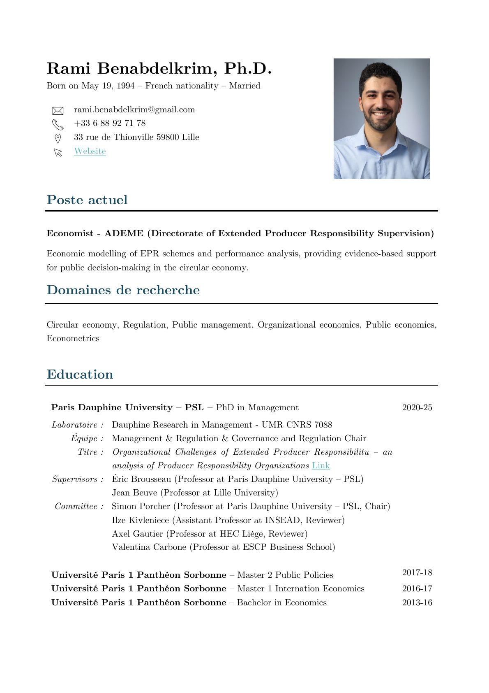

Curriculum Vitae
Ph.D. in Management from Université Paris Dauphine–PSL. Economist at ADEME and Associate Researcher at the Governance & Regulation Chair.
Document

Read onlineExperience
Positions
-
2026 – present
Economist ADEME — Directorate of Extended Producer Responsibility Supervision (DSREP)
Economic modelling of EPR schemes and performance analysis, providing evidence-based support for public decision-making in the circular economy.
-
2025
Post-doctoral researcher Mines Paris – PSL — Centre de Gestion Scientifique
-
2021 – 2024
Doctoral researcher (CIFRE) EcoLogic France
-
2018
Economic study officer (internship) CRAPS
Education
-
2020 – 2025
Ph.D. in Management Université Paris Dauphine–PSL — Dauphine Recherches en Management (UMR CNRS 7088), Management & Regulation team, Governance & Regulation Chair
Organizational Challenges of Extended Producer Responsibility: An Analysis of Producer Responsibility Organizations
Supervision & committeeClose
- Supervisors
- Éric Brousseau, Professor, Université Paris Dauphine–PSL
Jean Beuve, Professor, Université de Lille - Committee
- Simon Porcher, Professor, Université Paris Dauphine–PSL (Chair)
Ilze Kivleniece, Assistant Professor, INSEAD (Reviewer)
Axel Gautier, Professor, HEC Liège (Reviewer)
Valentina Carbone, Professor, ESCP Business School
-
2017 – 2018
Master’s degree (M2) in Public Policy Université Paris 1 Panthéon-Sorbonne
-
2016 – 2017
Master’s degree (M1) in International Economics Université Paris 1 Panthéon-Sorbonne
-
2013 – 2016
Bachelor’s degree in Economics Université Paris 1 Panthéon-Sorbonne
Research fields
Circular economyRegulationPublic managementOrganizational economicsPublic economicsEconometrics
Publications and working papers are presented on the Research page.
Teaching
Courses taught
Université Paris Dauphine–PSL
-
2023 – 2025
Business Model Thinking M2 Management (Textile) · Lectures 12 h/yr · in English
-
2024 – 2025
Strategy Fundamentals L3 Management · Tutorials 32 h/yr · in French
IAE Lille
-
2026
Quantitative Methodology M1 Procurement & Supply Chain Management · Lectures 18 h/yr · in French
-
2026
Quantitative Methodology M1 Business Unit Management · Lectures 18 h/yr · in French
Université Paris 1 Panthéon-Sorbonne
-
2019 – 2024
Theory of Organizations L3 Economics · Tutorials 45 h/yr · in French
-
2019
Statistics L1 AES · Tutorials 32 h/yr · in French
-
2019
Political Economy Capacité en droit · Lectures 32 h/yr · in French
ENSTA Paris
-
2020
Contemporary Economics L3 Engineering · Lectures 32 h/yr · in French
Master’s thesis supervision
-
2025 – 2026
Régis Ouchoumaré M2 ENAMOMA, Université Paris Dauphine–PSL
-
2023 – 2024
Essia Rassa M2 Public Policy, Université Paris 1 Panthéon-Sorbonne
-
2021 – 2022
Shaïnès Foughali M2 Public Policy, Université Paris 1 Panthéon-Sorbonne
Communications
Conferences & seminars
International conferences
-
2025
22nd Institutional and Organizational Economics Academy (IOEA) Corsica, France
-
2024
5th Symposium on Circular Economy and Sustainability Chania, Greece
-
2024
26th International Network for Economic Research (INFER) Chania, Greece
-
2024
21st Institutional and Organizational Economics Academy (IOEA) Corsica, France
-
2023
20th Institutional and Organizational Economics Academy (IOEA) Corsica, France
-
2022
19th Institutional and Organizational Economics Academy (IOEA) Corsica, France
National conferences
-
2025
20th Congress of RIODD (International Research Network on Organizations and Sustainable Development) Toulouse
-
2024
19th Congress of RIODD Brussels
-
2023
2nd Annual Conference on Natural Resources and Local Economy (RENEL) Metz
-
2022
1st Annual Conference on Natural Resources and Local Economy (RENEL) Metz
Seminars & invited talks
-
2026
- Research seminar — HEC Liège
- Scientific Committee of the BALI Chair — ESMOD, Paris
- LUMEN team seminar — IAE Lille
-
2025
- Study day “Extended Producer Responsibility: state of play and future research”, ADEME & REP’ROGRAM — Le Mans Université
- Spring research day “Créer, relier, transformer : la filière en mouvement” — Université Paris Dauphine–PSL
- PhD seminar in Neo-Institutional Economics — IAE Paris
-
2024
- PhD Help Seminar — Université Paris Dauphine–PSL
- Governance & Regulation Chair internal seminar (twice) — Université Paris Dauphine–PSL
-
2023
- Governance & Regulation Chair internal seminar (twice) — Université Paris Dauphine–PSL
-
2022
- Governance & Regulation Chair internal seminar — Université Paris Dauphine–PSL
- Management & Organization doctoral workshop — Université Paris Dauphine–PSL
-
2021
- Seminar on the Economics of Public-Private Partnerships — IAE Paris
- Management & Organization doctoral workshop — Université Paris Dauphine–PSL
-
2020
- Public Governance Working Group — Université Paris Dauphine–PSL
- Governance & Regulation Chair internal seminar — Université Paris Dauphine–PSL
Public talks & media
-
2026
INTERREG NPA THREADs webinar
-
2026
50th anniversary of Dauphine Recherches en Management Paris
-
2025
French Ministry of the Economy — Directorate General for Enterprise (DGE) Paris
-
2025
EcoLogic France eco-design webinar no. 15
-
2024
Presentation of the Governance & Regulation Chair (YouTube)
-
2022
FEDEREC Annual General Meeting Paris
Skills
- Languages
- French (native), English (fluent)
- Quantitative
- R, Stata, LaTeX
- Design & web
- Photoshop, Illustrator, InDesign, WordPress, Strapi
- Office
- Microsoft Office